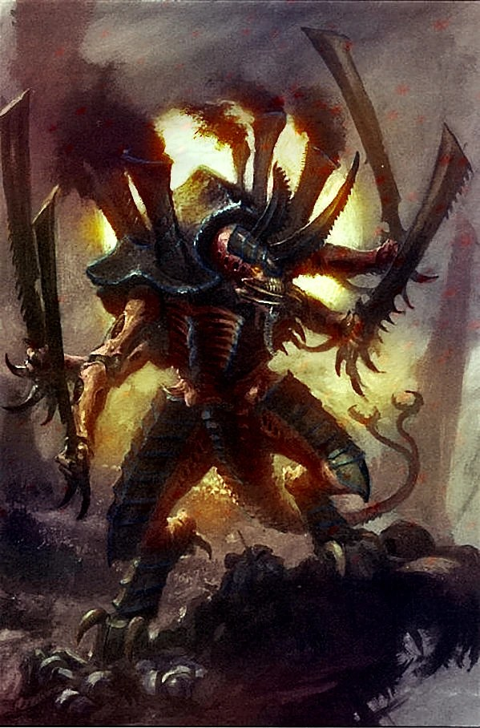

Swarmlord
| Swarmlord | |
|---|---|
 The Swarmlord, from an Ordo Xenos plate | |
| Classification | Tyranid command organism (Hive Tyrant strain) |
| First recorded | 745.M41, at Tyran and Thandros, in the First Tyrannic War |
| Hive fleets | Behemoth, Kraken, Leviathan |
| Status | Active; re-spawned after each death |
| Weapons | Four bone sabres; synaptic and psychic powers |
| Known for | Duels with Marneus Calgar at Macragge (745.M41) and Ichar IV (992–993.M41); the Devastation of Baal (999.M41) |
The Swarmlord is a unique Tyranid organism, a greater form of the Hive Tyrant that the Hive Mind creates to lead its invasions at times of great need. It is the Hive Mind's general and its most direct voice on the battlefield. When it is killed, its mind and memories are drawn back into the Hive Mind, and it is reborn in a new body when it is next needed, each time more knowledgeable of its enemies.[1]
Imperial records first identify it at the end of the war against Hive Fleet Behemoth in 745.M41. It led Hive Fleet Kraken in the Second Tyrannic War and was slain by Marneus Calgar of the Ultramarines at Ichar IV in 992–993.M41. It returned at the head of Hive Fleet Leviathan in 997.M41 and led the attack on Baal in 999.M41, where Commander Dante killed it. The Ordo Xenos counts it among the most dangerous enemies the Imperium has faced.[1][2]
Nature
[edit]The Swarmlord is larger than an ordinary Hive Tyrant and has four arms ending in bone sabres, which it uses with great skill. Its synaptic link to the Hive Mind is far stronger than that of any other organism, so that the swarms around it act with a cunning and coordination that other Tyranid forces lack. It can plan campaigns across whole systems as well as lead a single assault. The Hive Mind wakes it only when a war has become too difficult for its other creatures.[1]
Its rebirth is what makes it most dangerous. Each body dies, but the mind does not. Every defeat teaches it, and the Ordo Xenos warns that the Swarmlord that attacked Baal knew the tactics of the Adeptus Astartes far better than the creature that attacked Macragge.[1]
History
[edit]Behemoth
[edit]The Swarmlord was first seen in 745.M41, leading the final assaults of Hive Fleet Behemoth on the worlds Tyran and Thandros during the Imperium's first war against the Tyranids. At the Battle of Macragge later that year, the Ultramarines under Marneus Calgar met it at Cold Steel Ridge, where its grasp of tactics matched their own. Its nature was not understood at the time, and the Inquisition identified it only later from surviving records.[1]
Kraken and Ichar IV
[edit]The Swarmlord led Hive Fleet Kraken in the Second Tyrannic War. On the hive world Ichar IV, in 992–993.M41, it met Marneus Calgar again. Calgar and the Chaplain Ortan Cassius cut the swarm's synaptic control, and Calgar killed the Swarmlord with his own hands; the defeat of the Kraken's assault on the planet followed.[a][1]
Leviathan and Baal
[edit]In 997.M41 the Swarmlord was reborn to lead Hive Fleet Leviathan, and it directed the fastest and most destructive planetary invasions of that fleet. In 999.M41 it led the Leviathan swarms that descended on Baal, the homeworld of the Blood Angels. When the last defences of the Arx Angelicum fell, the Swarmlord came forward and cut down the defenders with its bone swords. Commander Dante, wounded in a dozen places, fought his way to it with the Axe Mortalis and killed it in a duel before falling himself. The storm of the Great Rift then passed, and Roboute Guilliman's fleets were found in orbit where the Tyranid fleet had been. The Inquisition assumes that the Swarmlord will be reborn again.[2]
Era Indomitus
[edit]In the Era Indomitus, Tyranid tendrils have spread through the galaxy, and Imperial forces on several fronts have reported a command organism matching the Swarmlord's description. The Ordo Xenos cannot say whether these reports describe one creature or several, or whether the Hive Mind can now create more than one at a time.[3]
Timeline
[edit]| Date | Event |
|---|---|
| 745.M41 | Leads Behemoth's assaults on Tyran and Thandros |
| 745.M41 | Meets the Ultramarines at Cold Steel Ridge, Macragge |
| 992–993.M41 | Slain by Marneus Calgar at Ichar IV |
| 997.M41 | Reborn to lead Hive Fleet Leviathan |
| 999.M41 | Leads the attack on Baal; slain by Dante |
| Early M42 | Reported on several fronts of the Era Indomitus |
See also
[edit]Notes
[edit]- ^ Imperial records give the Battle of Ichar IV as 992.M41 or 993.M41; the war was declared in 992.M41 and the main fleet broken by about 993.M41.